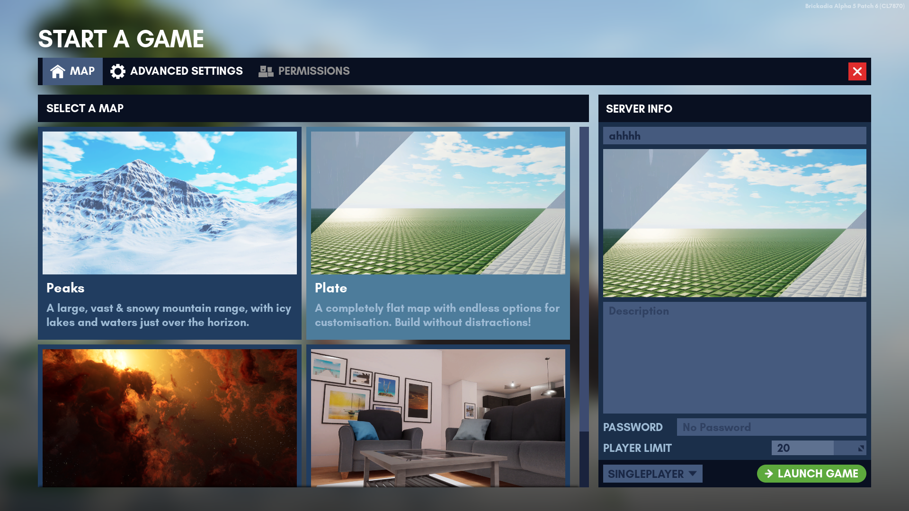
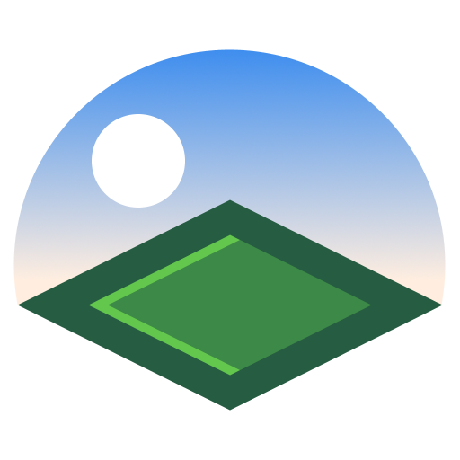
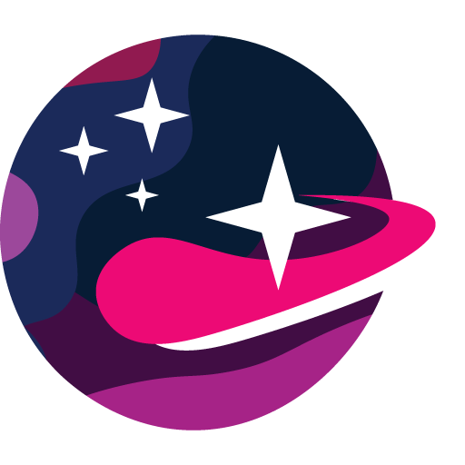
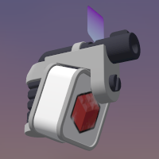
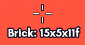
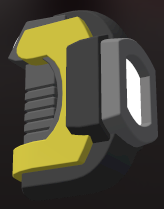
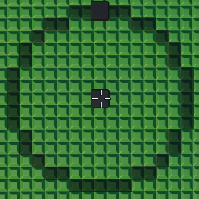
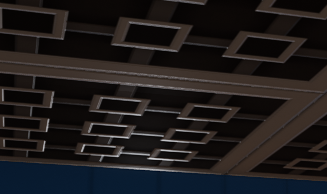
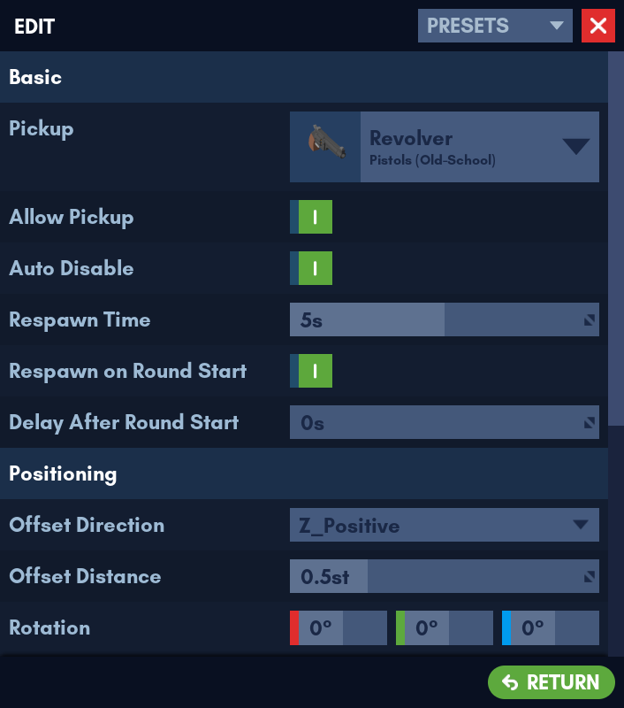

Brickadia
Brickadia is a multiplayer brick building game designed to handle massive constructions, with creative online gameplay.
This manual aims to teach you just about everything you need to know. It is open source, and you can contribute on GitHub if you find that it doesn't.
Community
Game Version
This manual is written for Brickadia version CL7870 (Alpha 5 Patch 6), released on April 17, 2022.
System Requirements
Brickadia's requirements are only a rough estimate of what your real-world performance would be like on the game itself. Therefore, you won't always be able to run Brickadia on every server. Different servers call for varying levels of hardware performance.
The game supports Nvidia's DLSS upscaling - which means you can render the game at much less performance cost, the main trade-off being the image quality compared to native resolution.
Apple macOS and ARM processors are not officially supported at this point in time.
Windows - Client
Minimum
- 64-bit x86 processor
- DirectX version 11 capable integrated GPU / dedicated graphics card
- 8 GB of system RAM (not including graphics card VRAM)
- Windows 10 or later versions
- 2GB of free disk space
Recommended
- 6 core processor or better
- Graphics cards:
- Nvidia: RTX 30 series graphics card or better
- AMD: RX 6000 series graphics card or better
- Intel: Arc series graphics card or better
- 16 GB of system RAM or more
- 4 GB of GPU VRAM or more
Windows - Server
To be added.
Linux - Client
To be added.
Linux - Server
To be added.
Installation
Brickadia has a launcher that will update the game for you, so you'll only need to install it once.
Windows
Download the Windows installer from the download page and run it.
Windows SmartScreen may say that "Windows protected your PC" because the installer has not been run by enough users. To continue, click **More info**, then **Run anyway**.
If you do not have the More info option, you will need to adjust a setting:
- Open the Windows Defender settings
- Go to App & browser control
- Under Check apps and files, select the Warn option instead of the Block option
- Run the installer again
You'll get a shortcut to start Brickadia on your desktop, and several others in your start menu.
Linux
The Vulkan renderer in the game is known to be unstable in its current state. If you're experiencing random bouts of crashing, you may want to [try running the game in Proton](./installation_proton.md).*
Brickadia can be started from application entries.
Debian/Ubuntu
Download the brickadia-launcher.deb package from the download page.
On most distributions, you should be able to open it to install it. If not, run this command:
sudo apt install ~/Downloads/brickadia-launcher.deb
Arch Linux
Install brickadia-launcher from the AUR.
Other
An official package is not available for any other distributions yet, but you can download an archive of the launcher that should work on most Linux distributions, provided that you find the dependencies.
Download the brickadia-launcher.tar.xz archive from the download page. Extract it, and run the brickadia-launcher file to start the game.
The following is a list of dependencies based on the Debian package. The exact names may vary slightly by distro.
libbsd0
libc6
libcom-err2
libdbus-1-3
libexpat1
libfontconfig1
libfreetype6
libgcc1
libgcrypt20
libgl1
libglib2.0-0
libglvnd0
libglx0
libgpg-error0
libgssapi-krb5-2
libk5crypto3
libkeyutils1
libkrb5-3
libkrb5support0
liblz4-1
liblzma5
libpcre3
libpng16-16
libstdc++6
libsystemd0
libx11-6
libx11-xcb1
libxau6
libxcb-icccm4
libxcb-image0
libxcb-keysyms1
libxcb-randr0
libxcb-render-util0
libxcb-render0
libxcb-shape0
libxcb-shm0
libxcb-sync1
libxcb-util0 or libxcb-util1
libxcb-xfixes0
libxcb-xinerama0
libxcb-xkb1
libxcb1
libxdmcp6
libxext6
libxkbcommon-x11-0
libxkbcommon0
zlib1g
Installing Brickadia for use with Proton
Prerequisites
This will require an official version of Proton (downloadable from Steam (enable listing Tools in your Library/Games view) or from Valve's official repository), or any unofficial Proton fork you wish to use (GloriousEggroll, tkg, etc.).
You will also need Wine and winetricks installed, please see Wine's or your Linux distro's documentation on installing these.
The guide will follow Arch Linux procedures for installing packages, please adapt these instructions to your Linux distribution.
By default, Steam will place official Proton releases in ~/.local/share/Steam/steamapps/common, and looks for unofficial forks in ~/.steam/steam/compatibilitytools.d.
Commands denoted with a # will require root, those denoted with $ will be run as a normal user. sudo can be used to request root-level access on a per-command basis.
Setting things up
First, we need to install the prerequisite packages:
- wine
- winetricks
- curl
- steam (optional)
The multilib repository must be enabled for wine, winetricks, and optionally steam. Enable this in /etc/pacman.conf.*
# pacman -S wine winetricks
To keep things tidy, we need to create a folder for Brickadia to reside in, as well as the directory Proton needs to store its data.
$ mkdir -p ~/Games/Brickadia; cd ~/Games/Brickadia
Now we download the Brickadia launcher's installer
$ curl -o BrickadiaInstaller.exe "https://static.brickadia.com/launcher/1.4/BrickadiaInstaller.exe"
Installing the launcher
We first need to set an environment variable so that Proton knows where to store data. To make life a little easier for us, we'll also set where we have Proton installed.
$ export STEAM_COMPAT_DATA_PATH=$HOME/Games/Brickadia
$ export PROTON_DIR=$HOME/.local/share/Steam/steamapps/common/Proton\ 5.0
Then, we run the launcher installer using Proton
$ "$PROTON_DIR"/proton run BrickadiaInstaller.exe
The installer may seem to lock up after a minute while installing the VC2010 redistributable package. If this is the case, simply <kbd>Ctrl</kbd>-<kbd>C</kbd> in your terminal and re-run the above command. It may take 2-3 attempts, but should eventually pull through and finish installing.
Once the launcher installs, we need to re-install VC2010 manually (author note: I don't know if the x64 version installed by the installer is damaged or if the x86 version is supposed to be installed alongside it. winetricks takes care of both situations.)
Ignore any warnings that appear in the terminal, these are normal. Choose the repair option for the x64 installer.
$ WINEPREFIX=$STEAM_COMPAT_DATA_PATH/pfx winetricks vcrun2010
Running the game
After the launcher is installed and VC2010 is manually re-installed, the launcher should now be able to download the game's files and launch.
To make things easier, we'll put the directory the launcher was installed to in an environment variable.
$ export LAUNCHER_DIR=$STEAM_COMPAT_DATA_PATH/pfx/drive_c/Program\ Files/Brickadia/BrickadiaLauncher
Now we launch!
$ "$PROTON_DIR"/proton run "$LAUNCHER_DIR"/BrickadiaLauncher.exe
Scripts for one-click installing/running
Place these in the ~/Games/Brickadia folder you created in the beginning of the guide:
https://gist.github.com/TheBlackParrot/280b9f86dcc41085f9213b9ef75dcf55
Main Menu

The main menu is central to the Brickadia experience.
The feed on the right displays the newest Brickadia blog articles. The Brickadia blog is known for game updates and developer logs which document the progress of the game.
You can log out and change your account here or check out the links below the feed.
A summary of menu items on the left:
Join A Game : Browse servers from a list and join them.
Start A Game : Play in single player or start your own server, complete with its own settings. (Requires port forwarding).
Edit Avatar : Customize the look and colors of your avatar.
Options : Adjust general preferences, controls, sounds and graphics settings.
About : Credits for Brickadia, including developers, contributors and software licenses.
Quit : Quits the game.
Joining A Game
In this menu, you have a searchable server list, feature complete with server names, hoster name, descriptions and common server statistics like active players, visits, overall brick count and map.
To get started with playing online for the first time, simply pick a server and click Join Game.
Unlisted servers will not appear in this menu.
Below are the icons that can appear next to a server's name.
- Dedicated server: This server will stay on even without players. Usually, they are considered running 24/7. See Dedicated Servers for more information.
 Passworded server: Requires a password, which is given at the discretion of the owner and can be changed at any time without notification.
Passworded server: Requires a password, which is given at the discretion of the owner and can be changed at any time without notification.
Manual Connect
- Click Manual Connect on the top right of your screen.
- Enter the server's IP and password. Leave password blank if the server has no password.
- Click Join Game.
Viewing Players
Click View Players.
**To respect account privacy settings, some player names are hidden.**
Maps
There are currently a total of 4 maps in the game. You can select one of them from the "Start A Game" menu, or the "Edit Game" menu. Each map has different settings that may not be interchangeable with other maps at all.
Label your [Presets]() according to the map name. This makes them easier to find when loading map presets.

List of Official Maps
| Icon | Name | First added | Description |
|---|---|---|---|
|  | Plate | Initial release | A completely flat map with endless options for customisation. Build without distractions! |
 | Studio | Alpha 4 | A cosy summer home with carefully hidden secrets, and many places to build in. |
| Peaks | Alpha 4 | A large, vast & snowy mountain range with icy lakes and waters just over the horizon. | |
|  | Space | Alpha 5 Patch 5 | The vast emptiness of space awaits you. Oh, and fancy nebulae! |
Edit Game
Not to be confused with Start a Game.
This menu can be accessed from the Pause menu.
The *Save* button applies all settings at once, including your map, advanced settings and permission changes.
1. Press <kbd>Esc</kbd> to open the [Pause Menu]().
2. Click _Edit Game_
3. Change selected map, advanced settings and permissions as needed.
4. Check all your settings, including selected map.
5. Finalize all settings by clicking the _Save_ button.

Server Info
Requires a role with the following permission: Edit Server Settings
The panel on the right serves as a quick way to customize your server's name, description, password and player limit. It also displays your current map as a thumbnail.
The maximum player limit is currently restricted to 30 due to known server performance issues beyond this limit.
Changing Maps
Requires a role with the following permission: Change Map
- Click the Map tab.
- Head over to the Edit Game menu while playing.
- Select your desired map and click Save and Change Map.
Any unsaved builds are lost if you change the map.
Advanced Settings
Requires a role with the following permission: Edit Server Settings
In-Game
Prefab Limits
Selector Limits
Auto Saving
Permissions
Requires a role with the following permission: Edit Server Roles
Roles and Permissions
Placeholder
Catalog
The catalog is where you get your bricks and weapons from.
Currently, you are able to browse:
Browsing the Catalog
To access the Catalog, simply press B. You can switch between bricks and weapons on the top bar.


To get an item from the Catalog, simply click one of the items you want or click and drag the item to the Quickbar. This will put it in the Quickbar.
To remove items from your Quickbar, right click on them or click and drag the item back to the Catalog.
To add a brick to the Quickbar as a temporary brick, middle click the brick you want in the Catalog. This exits the Catalog.
Presets
In Brickadia, presets are everywhere.
Presets can be saved for:
- Avatars
- Palettes
- Components
- Minigames
- Environment configurations
- All settings
Presets Menu
The Presets menu is accessible at any given point when it's possible to save configurations as presets.
Click any preset to load it.
When you hover over a preset in this menu, 3 options will show.

Here's a list of the options (in order):
- Rename - Click this button to rename the preset.
- Overwrite - Click this yellow button to overwrite the preset with your current configuration.
- Delete - Click this red button to remove the preset.
Quickbar
The Quickbar is where you equip your current brick or item.
How to use the Quickbar
To add an item to your Quickbar, browse the Catalog and from there, click any item you want to put it in the Quickbar.
To remove an item from your Quickbar, right-click the item in the Quickbar.
To switch the Quickbar mode in gameplay, press CtrlQ to switch between items and bricks.
The quick bar in brick mode:
The Quickbar in item mode:

This can be configured through Minigames.
Default Keybindings
| Action | Keybinding | Notes |
|---|---|---|
| Equip Slot 1-10 | 1 to 0 | |
| Next Slot | Mouse Wheel Up | |
| Previous Slot | Mouse Wheel Down | |
| Switch Mode | CtrlQ | Switches the Quickbar between bricks and items. |
Building: Tools
In Brickadia, there are several types of tools you can use to enhance your building experience. Currently, there are a total of 7 building tools in the game. The most prominent ones are the Placer, Painter and Hammer.
List of Tools
This is a summary of these tools, to view the full functionalities, please refer to the building tools' own pages.
-
Placer Q : Place your bricks precisely.
-
Painter E : Change the material and color of your bricks.
-
Hammer X : Delete your bricks individually or view ownership of a brick.
-
Resizer M : Resize a brick or get its size.
-
Selector : Select multiple bricks at once for common operations like deletion or duplication.
-
Applicator : Configure a brick's visibility, collision channels and apply functionality to your creations with Components.
-
Outliner : Can only create circle guides as of now.
Tool Pie Menu

To equip a tool from the Tool Pie Menu, hold the G key to open the menu. Hover over the tool you want and release the G key.
Alternatively, you can also unequip or change tools through this menu.
Default Key Binds
| Action | Keybinding |
|---|---|
| Open Tool Pie Menu | Hold G |
| Equip Placer | Q |
| Equip Painter | E |
| Equip Hammer | X |
| Equip Resizer | M |
Selector, Applicator do not have any keybindings by default. Outliner keybind does not exist yet.
Placer

The Placer is a tool for placing bricks.
Getting Started
Grab some bricks from the Catalog (default key is B). Once you've done that, you can just simply click to place a brick!
The placer also allows row dragging in a direction. Just hold left click and drag to a direction that you want to place bricks in a row.
Temporary bricks
You can copy bricks by middle clicking. This allows you to place the brick like any other.
Copying can be done in two ways:
- As a temporary brick. The copied brick type will remain selected in the quickbar until you switch to something else.
- As a new quickbar brick (hold Ctrl). The copied brick type will be added to the end of your quickbar, like bricks chosen from within the catalog are.
Default Keybindings
| Action | Keybinding | Notes |
|---|---|---|
| Add Brick as Temp Brick | Middle Click | Copies a brick and puts it into your Quickbar as a temporary brick. |
| Add Brick | Ctrl Middle Click | Copies a brick and puts it into your Quickbar. |
Painter

The Painter is a tool for painting bricks.
Getting Started
To paint a brick, left click. You can hold left click to continue painting across bricks. You can paint both colors and materials.
To copy a color from a brick, use middle click on that brick.
This is the menu for the paint tool.

Colors and Materials
The colors that you are able to paint with can be changed in the Server Settings using a palette Preset.
Available materials include:
- Plastic (no slider)
- Glass
- Glow
- Metallic
- Hologram
Default Keybindings
| Action | Keybinding | Functionality |
|---|---|---|
| Copy Color | Middle Click | Copies the color of a brick. |
| Scroll through Palette | Mouse wheel (vertically), E (horizontally) | Scrolls through the palette to select a color. |
| Change Material | Ctrl E | Switch between scrolling through the colors or materials palette. |
| Change Material Slider | Ctrl Mouse Wheel | Changes the material slider while scrolling through the materials palette. |
Hammer

The Hammer is a tool for removing bricks.
Getting Started
The Hammer is simple to use. Left click on the brick you want to remove. You can hold left click to remove bricks consecutively. It can also hit players.
Ownership Checking
To check ownership of a brick with the hammer, you can press middle click on a brick.

Default Keybindings
| Action | Keybinding | Functionality |
|---|---|---|
| Get Ownership | Middle Click | Gets ownership of a brick. |
Resizer
The Resizer is a tool for resizing bricks.

Getting Started
To resize a brick, simply click on a brick that you want to resize. Once you have done that, you can drag the handles to resize the brick in directions.

Brick Size Checking
To check the size of a brick with the resizer, you can press middle click on a brick.

Default Keybindings
| Action | Keybinding |
|---|---|
| Get Brick Size | Middle Click |
| Resize Brick to Maximum | Ctrl Middle Click |
Selector

The Selector is a tool for selecting many bricks at once. Currently, you can delete many bricks, cut brick selections, copy and paste brick selections from this tool.
Getting Started
There are a few ways to select bricks with this tool. This includes:
- Clicking a brick with the tool and resizing the selection box with the handles.
- Clicking a brick with the tool, and then Ctrl-clicking another brick to expand the selection box.
For reference, this is what the selection box and its adjustment handles looks like.

You can also adjust the selection box more precisely (under the size of a stud) by holding the Fine Selection keybinding.
Deleting, Cutting, Copying and Pasting Selections
These actions with the selector all use the standard PC keybindings, although there's an additional keybinding to retain ownership when pasting bricks called Advanced Paste Selection.
Default Keybindings
| Action | Keybinding | Notes |
|---|---|---|
| Copy Selection | CtrlC | |
| Paste Selection | CtrlV | Switches to the Placer tool. |
| Advanced Paste Selection | CtrlShiftV | Keeps the ownership of the selection intact. |
| Cut Selection | CtrlX | |
| Delete Selection | Delete | |
| Fine Selection | Hold Ctrl | Allows you to resize the selection box in microbrick increments. |
Applicator

The Applicator is a tool for applying Components to bricks. The tool is compatible with Presets.
The current default component list includes:
Getting Started
To get started, point at a brick of your choosing and left click with the Applicator tool equipped. The Applicator menu will appear.
Brick Properties
Visibility
The visibility of a brick can be toggled. Don't worry about not being able to see invisible bricks while editing - all invisible bricks are shown through an effect.
Collision
Collision can be toggled on individual bricks. There are three collision channels:
- Player collision
- Projectile collision: Bullets, rockets
- Interact collision: Clicking
Components
You can add new components, delete existing components or edit the components of a brick.
There can only be one of each component type. For example, you cannot have two Spot Lights per brick at once. You must place an additional brick for that.
Duplication
When outside of the Applicator menu, you can Ctrl-C on a brick to copy its properties and components. Once you have done that, you can Ctrl-V to paste those properties and components on other bricks.
Probing
The Applicator can also let you view existing components of a brick outside the Applicator menu, as seen in the example below.
Default Keybindings
| Action | Keybinding |
|---|---|
| Copy Properties & Components | Ctrl-C |
| Paste Properties & Components | Ctrl-V |
Outliner

The Outliner can currently only make circle guides.
Getting Started
To use the Outliner, simply click and drag to generate a circle. To remove the circle, press Delete while equipping the Outliner.
To resize the circle, simply drag the top handle. To move the origin of the circle, simply drag the center of the handle.

Default Keybindings
| Action | Keybinding | Functionality |
|---|---|---|
| Delete Circle | Delete | Removes the circle guide. |
Building: Guides
Grid
Grid Guide

The visual grid serves as a reference of alignment. It adapts to the current grid size you're on. You can customize the transparency and color of it in the General Options.
Don't want the visual grid? Setting the transparency of the grid to 0% will turn it invisible.

Grid Size
You can change between grid sizes using Num -, except for the Brick grid size, which is only available through Alt.
Plate
: Dimensions of a 1x1f plate
1/2
: Half of a 1x1 plate, height is still the same as a 1x1f plate
1/5
: 2x microbrick size, half of a 1x1f plate's height
1/10
: Half of a 2x microbrick, most granular possible grid size
Brick (Alt only)
: The grid automatically adjusts to the size of your current brick.
Invisible Brick Indicator
When you have a building tool equipped, the game will show all invisible bricks with a half-opaque effect.

Chapter 4: Components
In Brickadia, components are very important for enhancing your builds. In fact, there are many of them placed throughout builds!
Here's a summary of each component and what each one does:
- Spot Light - Places a rotatable and adjustable spotlight.
- Point Light - Places an adjustable point light.
- Audio - Adds sound to a brick.
- Item Spawn - Spawns items on a brick.
Spot Light


This component adds a spotlight to a brick.

Component Settings
Basic
| Property | Input | Notes |
|---|---|---|
| Brightness | Number (lumen) | |
| Radius | Number (studs) | |
| Sync Brick Color | Bool | If true, uses the brick's color and disables "Custom Color". |
| Custom Color | Color | See Color Panels for more information. |
Overlapping spotlights can cause performance issues on lower-end hardware.
Advanced
| Property | Input |
|---|---|
| Cast Shadows | Bool |
Shadows can cause significant performance issues especially on lower-end hardware.
If a light's shadows aren't contributing to a scene enough, disable them to save on performance.
Spot Light
| Property | Input |
|---|---|
| Rotation | X, Y, Z angles |
| Inner Cone Angle | Angle |
| Outer Cone Angle | Angle |
Want a sharp appearance on a spot light? Set the Inner Cone Angle higher than the Outer Cone Angle.
Tips for this Component
- Spot lights rotate with the placer's ghost preview, so their Rotation settings aren't affected in any way.
- Do not overlap spot lights too much as this can cause performance issues.
- If the Inner Cone Angle is higher than the Outer Cone Angle, the spotlight will produce a result like this:

Point Light

This component adds a point light to a brick.

Tips for this Component
- You can use small radius point lights to light up signs, glowing crystals, neon lights, etc.
- Point lights without shadows can cause undesired light leaks. It is advisable to turn down the light radius when this happens.

- Do not overlap point lights too much as this can cause performance issues.
- Point light shadows are very intensive and can impact performance massively in large amounts, so use them carefully.
- It is important to use the Cast Shadows option sparsely or when it's necessary. Misuse of this can lead to your point lights casting abnormal shadows like this.

Audio

This component can add sounds or music to bricks.

Tips for this Component
- It is NOT recommended to use this component as a way to add loud sounds in public servers unless necessary, as this may disturb players or lead to server bans.
- You can use the Pitch Multiplier as a way to create a variety of sounds.
Item Spawn
This component can spawn weapons and adjust their pick-up appearance. Compatible with Minigames.

Tips for this Component
- Item spawns can be used as a way to decorate your build using the rotation and offset settings. Here is an example:

- Item spawns can be used in deathmatch maps as a way to add health pick-ups.
Users
If you encounter any of these specimens, you may need to exercise caution.
mizuno
Occasionally, you will see a player named mizuno. If you see him, leave the game, as you may already be in danger.
rlcbm
Please be advised that you will not be left unaware of the time.
Zeblote
A small percentile of users report sightings of a mysterious entity known only as Zeblote. Reports describe him judging the uses of bricks in the player's server, often deeming them terrible. Many users report symptoms of severe headaches and nausea after being informed of this. Please adjust your use of bricks accordingly.